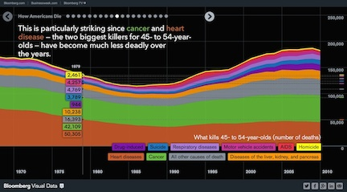

Yen Tran
Tech Blog
Khan Academy

Aside from my huge admiration of their mission, Khan Academy is one of my favorite sites. Their use of Youtube videos and their curriculum layout is simplistic and easy to use. I appreciate how they have broken down subjects into a manageable list of concepts and mapped it out in their 'Knowledge Map'. I loved school when I was a kid and feel like I can spend countless hours on this site.
When taking a step back from the homepage, I noticed that most of the page's text is grey, with the exception of "What do you want to learn?", the key heading at the top of the site. I believe this simple sentence may be the most important key item on the site. Since Khan Academy's mission is "A World Class Education for Anyone Anywhere", the natural first question to the user is 'What do you want to learn?'
The top five adjectives I would describe the website visually as a whole is 'Minimalistic', 'Clean', 'Fun', 'Light-hearted', and 'Uncluttered'. In terms of content, focus, and purpose, I would describe it as 'Admirable', 'Fun', 'Comfortable', 'Easy', 'Manageable'. It's nice to see the the visual aspect of the website is inline with the purpose and the mission of the company. In terms of usability, I was able to find what I was looking for within 2-3 clicks for the homepage. In addition, the search function on the homepage also makes it easy to find what I'm looking for easily. Overall, I found the site to be very easy to use and is clutter-free, which is something I appreciate.
Bloomberg Visual Data
I love analyzing and understanding the stats of social issue that's happening in the US. I recently discovered Bloomberg's Visual Data sites and remember being impressed when I first used it. These are interactive sites where by moving your mouse around, not only do you see what you are looking at, but also the comparative data that is associated with what you are looking at.
By stepping back, you notice that there is A LOT of BLACK. My guess would be that by setting the background color dark, the colorful graphs and data points pop-out much more on a black background. I would describe that these websites visually as 'edgy', 'informative', 'play' (with data), 'official', 'interactive'. In terms of content, focus, and purpose, I would describe it as 'informative', 'serious', 'serious', 'interactive', and 'official'. Again, I see alignment between the visual aesthetic of the site a the content.
Because the sites are meant to be presented in a linear presentation, you can't really navigate the sites like a typical website. Therefore, if you were looking for a specific data, it may be difficult to dig through the presentations. However, the speed at which the graphs is uploaded is VERY FAST. I also appreciate the dynamic visual presentation of the graphs.
Bloomberg offers many other visual data sites for other social and editorial content that the publication covers. I think the way they are presenting data that can normally be boring, is very cool. These don't sell anything, however maybe it will draw the reader to their other publications.
Airbnb
I love to travel, but sometimes hotel stays can get very expensive and some may argue that you are not really experiencing the surrounding by staying at an expensive hotel. This is why I love Airbnb's business model of connecting hosts and traveling guests together. I think visually, the site is stunning. I love how they use the constantly changing, beautiful photos as the backdrop for where they ask you where you would like to go and when. I also appreciate the 'photo-tile' look the site uses on the second half of the page to draw attention to their neighborhood guilds. The site is visually 'pretty', 'light', 'simple', 'elegant','organic'.
As you step back I realized that the homepage had only one question they want from you. "Where and when would you like to go and with whom?" That's it. None of the 'sign up here to see the room', or 'sign up here for a promotion'. The site just has one question, and they put it right front and center of the page. As you continue browsing through the site, you find that it is incredibly easy to use. One side of the page, you have the area map of the neighborhood with pins that correlate to the photos of rooms that are available. You can modify your selection by room type, price, and other features through the filter. I think this interactivity is incredibly user-friendly. In terms of content, focus and purpose, I would describe the site as 'easy', 'informative', 'safe', 'affordable', 'adventure'.
I find that navigating through this site is incredibly easy. There are really just 3 layers of pages that one needs to navigate through. Homepage, options page, and then the last is the detailed information about the place itself. If you are not finding what you want, you just need to go back to the options page and select another location.
Finding a place to live or visit is never easy and the process can make a person anxious. Which is why I appreciate how Airbnb makes the process and easy. Now I do have a confession, I have never actually booked a place myself through Airbnb, but this is because I have not had a travel opportunity that would allow me to use it lately. Hopefully that will change soon!